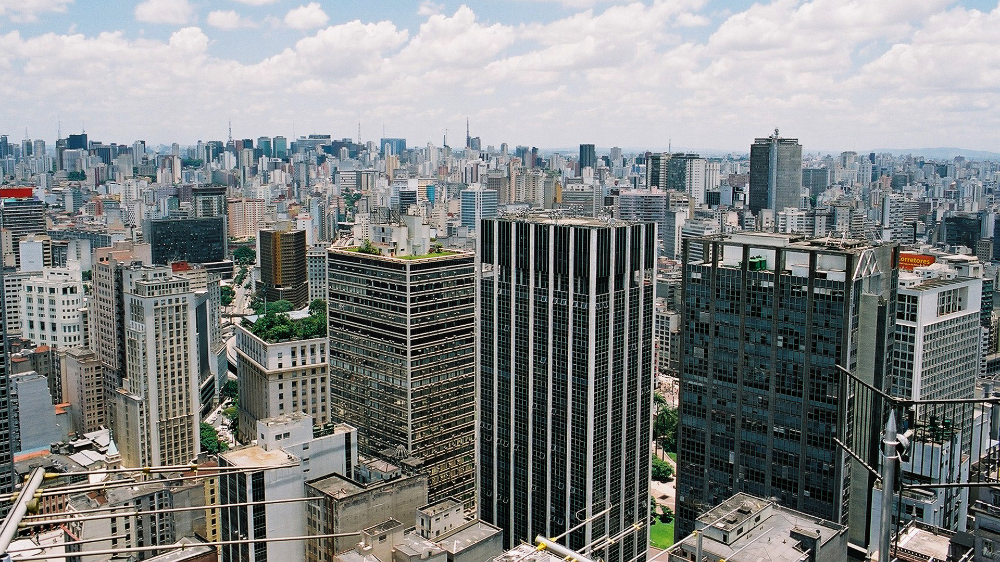
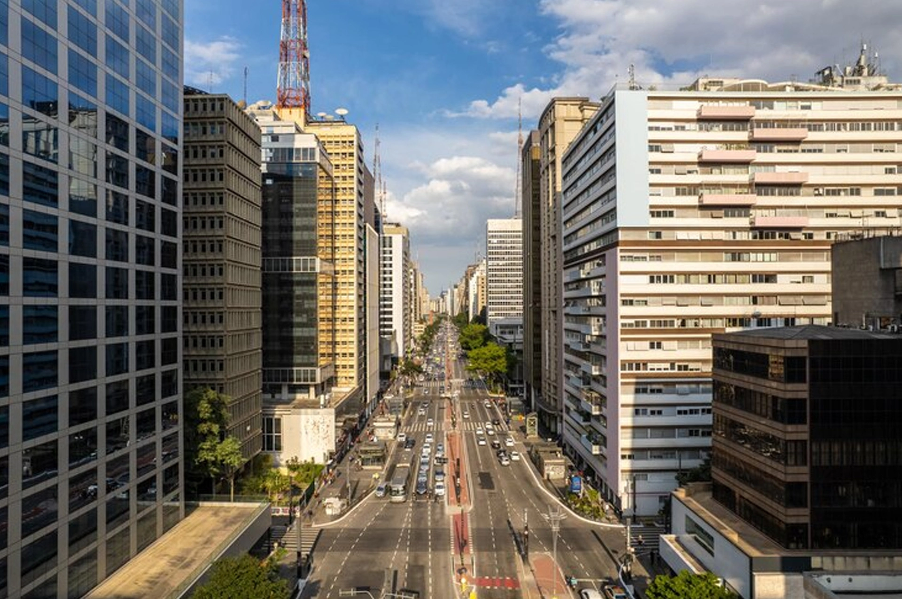
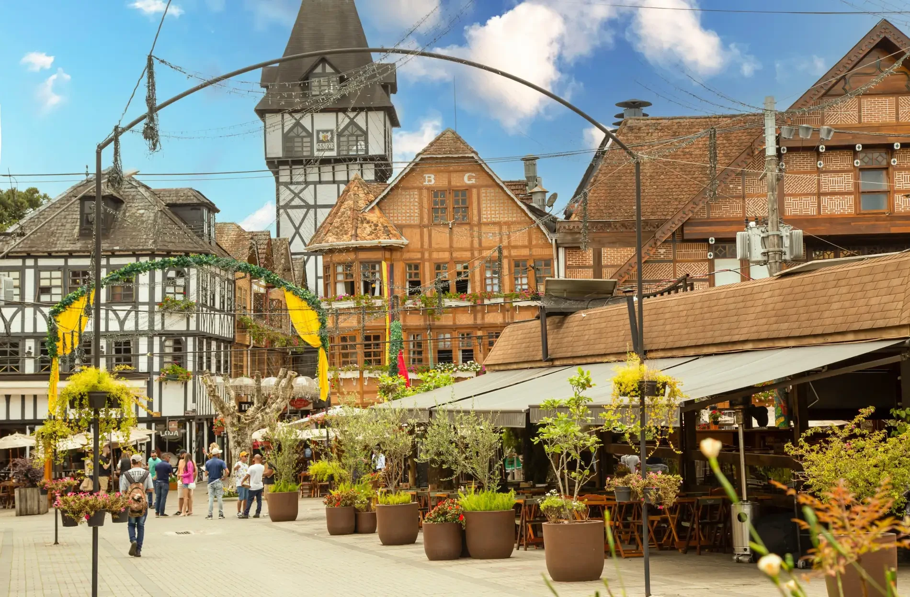
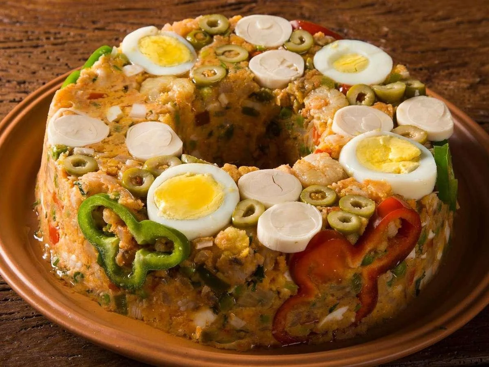
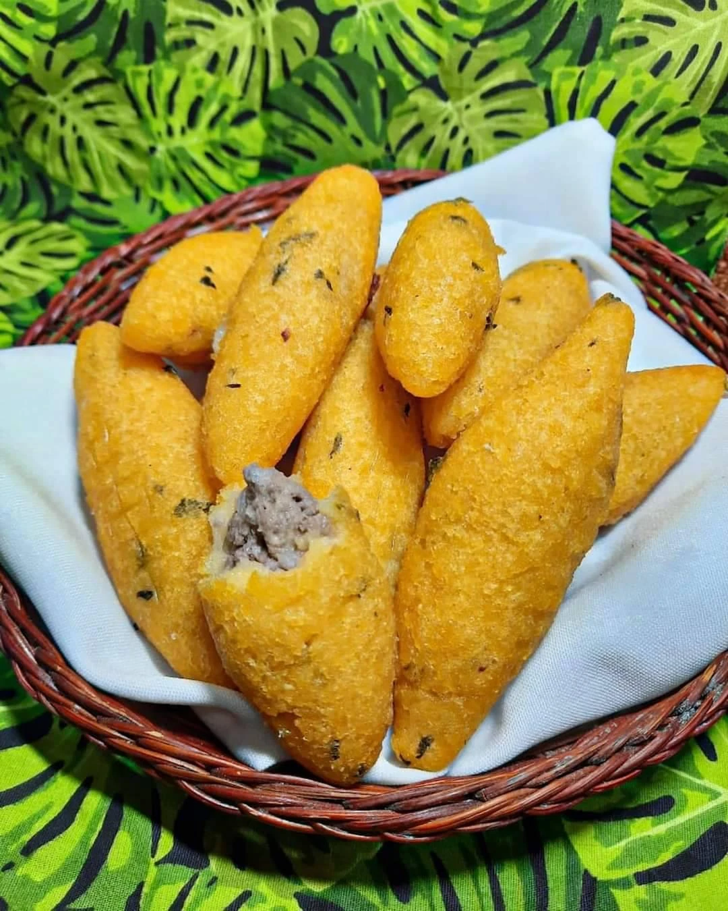

Capital
: São Paulo
Conheça destinos, culturas, sabores e paisagens de todas as regiões
brasileiras.
Destinos, culturas e paisagens
incríveis te esperam.
O estado de São Paulo está localizado na Região Sudeste do Brasil e é o mais populoso e economicamente desenvolvido do país. Destaca-se por sua forte industrialização, diversidade cultural, centros urbanos modernos, belas áreas naturais e importante patrimônio histórico. São Paulo reúne atrações para todos os perfis de turistas, desde grandes metrópoles até praias, montanhas e cidades históricas.

: São Paulo
Aproximadamente 248.219 km²
Cerca de 46 milhões de habitantes
Sudeste

Principal avenida da capital paulista, é um importante centro financeiro, cultural e turístico. Possui museus, centros culturais, parques e uma intensa vida urbana.
.webp)
Considerado um dos parques urbanos mais famosos do Brasil, oferece áreas verdes, lagos, ciclovias e importantes espaços culturais.

Conhecida como a "Suíça Brasileira", destaca-se pelo clima ameno, arquitetura europeia e belas paisagens da Serra da Mantiqueira.

Diferente do cuscuz nordestino, é preparado com farinha de milho, legumes, ovos, sardinha ou camarão, moldado em forma e servido frio ou quente.

Tradicional do Vale do Paraíba, é feito com massa de farinha de milho recheada com carne bovina temperada e frita até ficar crocante.
.webp)
Prato muito comum no interior paulista, resultado da influência dos imigrantes italianos. Combina frango ensopado com polenta cremosa ou frita.
Predomina o clima tropical de altitude. Verões quentes e chuvosos. Invernos mais secos e com temperaturas amenas. Campos do Jordão costuma apresentar temperaturas mais baixas durante o inverno.
Predomina o clima tropical de altitude. Verões quentes e chuvosos. Invernos mais secos e com temperaturas amenas. Campos do Jordão costuma apresentar temperaturas mais baixas durante o inverno.
Capital: para cultura, gastronomia, museus e vida noturna. Litoral Norte: praias paradisíacas como Ubatuba, Ilhabela e São Sebastião. Serra da Mantiqueira: para ecoturismo, montanhas e clima frio. Interior: cidades históricas, fazendas e turismo rural.
Capital: para cultura, gastronomia, museus e vida noturna. Litoral Norte: praias paradisíacas como Ubatuba, Ilhabela e São Sebastião. Serra da Mantiqueira: para ecoturismo, montanhas e clima frio. Interior: cidades históricas, fazendas e turismo rural.
Experimente o Virado à Paulista. Visite o Mercado Municipal para provar o famoso sanduíche de mortadela. Aproveite os pastéis das feiras livres.
Experimente o Virado à Paulista. Visite o Mercado Municipal para provar o famoso sanduíche de mortadela. Aproveite os pastéis das feiras livres.